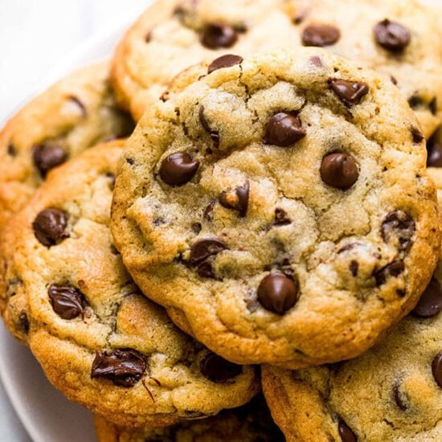

Welcome to Tom's Cookies!
Tom's Cookies has been producing cookies since the year 1952. We source all of our ingredients locally, using nothing but the best. We pride ourselves with having the chewiest and gooeyest cookies on the market. Once you try them, you'll never buy proccessed grocery store cookies again.
